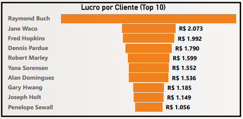
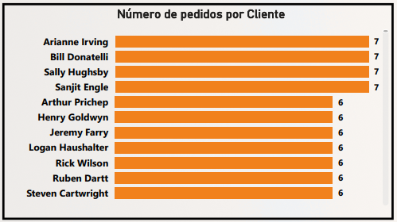
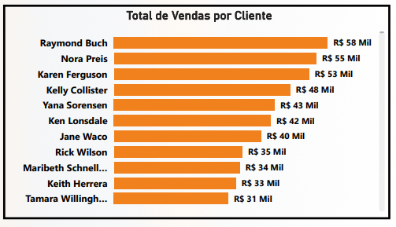

Project: Amazon Dashboard - Sales and Profitability Analysis
Introduction
This project presents a Sales and Profitability Analysis Dashboard, developed to simulate Amazon’s e-commerce and retail environment. The main objective is to provide a detailed view of the company’s financial performance over the years, identify the most profitable products and categories, analyze customer purchasing behavior, and evaluate operational efficiency, such as delivery time. The dashboard aims to empower management to make strategic decisions related to inventory, pricing, marketing, and supply chain optimization.
Project Structure
The dashboard is organized into different sections, each focusing on a crucial aspect of business analysis:
- Financial Overview: KPIs for sales, profit, and margin, plus a timeline of annual performance.
- Featured Products and Customers: Identification of best-selling products and most profitable customers.
- Analysis by Category: Detailing orders, profit, and sales by different product categories.
- Operational Efficiency and Order Behavior: Evaluation of average delivery time and the distribution of orders by month and by customer.
Technologies Used
For the construction of this dashboard, the tools employed were:
- Power BI Desktop: To connect the data source, perform the necessary modeling and transformation, develop DAX measures for complex calculations, and build the interactive visuals that compose the dashboard.
- Figma: The prototyping and design of the dashboard were done with Figma, ensuring an intuitive and visually appealing user experience.
ETL Process (Extract, Transform, and Load)
The ETL process for the Amazon Dashboard was rigorously executed to ensure data quality and integrity:
- Extraction: Data was extracted from a single Excel spreadsheet (
.xls), which consolidated all the sales, product, customer, and operational information necessary for the analysis. - Transformation: In Power Query, an integral part of Power BI, various cleaning and enrichment operations were performed. This included:
- Data treatment, such as standardizing names and correcting values.
- Creation of new columns and calculated metrics that would be essential for the analyses, using the M language.
- Data modeling was carefully defined, establishing relationships between tables and ensuring that all information could be correctly aggregated and filtered for multidimensional analysis.
- Loading: After the extraction and transformation steps, the data was loaded into the Power BI data model, ready to feed all the charts and tables of the dashboard, allowing for interactive exploration.
Dashboard
The dashboard presents a clear and organized layout, with intuitive navigation between the different analyses. The interface combines KPI cards, bar and line charts for temporal trends and rankings, as well as detailed tables. Each visual is designed to highlight key information and allow interactive data exploration, facilitating the identification of patterns and actionable insights for the business.
Insights
The analysis of the data presented in the dashboard revealed valuable insights into sales and profitability performance:
- Robust Financial Overview:
- The dashboard highlights a Total Sales of R$ 3.59 Million and a Total Profit of R$ 108 Thousand.

- The Profit Margin is 3.02%, indicating efficiency in converting sales into profit.
- The temporal analysis of Sales by Year shows continuous growth from 2011 to 2014, with 2014 recording the highest sales volume, close to R$ 1.5 Million, highlighting a positive trajectory of expansion.
- The dashboard highlights a Total Sales of R$ 3.59 Million and a Total Profit of R$ 108 Thousand.
- Featured Products and Customers:
- Among the Best-Selling Products, “Staples” leads with R$ 1.2 Million in sales, followed by products such as “Wilson Jones Clip &…” and “Cardinal EasyOpen …”, with R$ 1.0 Million. This data is crucial for inventory management and targeted marketing campaigns.

- In the analysis of Profit by Customer, Raymond Buch stands out, followed by Jane Waco, evidencing the most valuable customers for the business and the importance of loyalty programs.

- Among the Best-Selling Products, “Staples” leads with R$ 1.2 Million in sales, followed by products such as “Wilson Jones Clip &…” and “Cardinal EasyOpen …”, with R$ 1.0 Million. This data is crucial for inventory management and targeted marketing campaigns.
- Efficiency and Performance by Category:
- The Average Ticket for sales is R$ 2,230.55, and the Average Value per Unit is R$ 226.49, indicating the transactional value per order and per item sold.

- In Number of Orders by Category, “Binders” leads with 403 orders, followed by “Paper” (384) and “Furnishings” (281), suggesting high demand for these items.
- Sales by Category shows “Copiers” with R$ 0.50 Million and “Phones” with R$ 0.49 Million, leading in revenue.

- On the other hand, in Profit by Category, “Tables” (R$ 19 Thousand), “Copiers” (R$ 16 Thousand), and “Binders” (R$ 16 Thousand) are the largest contributors, revealing that categories with the highest sales volume are not always the most profitable.

- The Average Ticket for sales is R$ 2,230.55, and the Average Value per Unit is R$ 226.49, indicating the transactional value per order and per item sold.
- Order and Customer Performance:
- The Average Delivery Time is 3.93 days, an important KPI for customer satisfaction. The Total Number of Orders in the period is 1,611.
- The analysis of Orders by Month over the years reveals that September (227), November, and December (both with 234 orders) are peak months, suggesting seasonality in purchases.
- In Number of Orders by Customer, Arianne Irving and Bill Donatelli are among the customers with 7 orders each, showing high purchase frequency.

- Total Sales by Customer reiterates the value of Raymond Buch (R$ 58 Thousand) and Nora Preis (R$ 55 Thousand) as the customers who generate the most revenue.

- The Average Delivery Time is 3.93 days, an important KPI for customer satisfaction. The Total Number of Orders in the period is 1,611.
Considerations
The dashboard offers a solid basis for optimizing Amazon’s (simulated) operations and sales strategies. Based on the insights obtained, some important considerations emerge:
- Product Mix Optimization: The difference between best-selling and most profitable categories (“Copiers” and “Phones” vs. “Tables”) indicates the need for a more in-depth cost and pricing analysis. The company can focus on increasing sales of highly profitable items or seek ways to improve the margin of high-volume products.
- Inventory Management and Seasonal Demand: The peak in orders between September and December is a clear indicator of seasonality. Inventory management and marketing campaign planning should be intensified during these months to capitalize on demand.
- Continuous Improvement of Delivery Time: An average delivery time of 3.93 days is reasonable, but in a competitive environment like e-commerce, continuous optimization of this KPI can be a crucial differentiator for customer satisfaction and retention.
- Loyalty and VIP Programs: Identifying the most valuable customers, both in terms of profit and sales, allows for the creation of loyalty programs or personalized offers to encourage repeat purchases and strengthen relationships.
- Performance Analysis by Year: The annual growth trend is positive, but it is important to investigate the factors that drove the increase in sales in 2014 to replicate these strategies in future periods.
Conclusion
The Dashboard was a comprehensive analytical tool that transforms sales and operational data into actionable business intelligence. Its main contribution lies in its ability to:
- Provide a clear view of the overall financial performance and the company’s growth trajectory.
- Identify the products, categories, and customers that drive revenue and profit.
- Analyze operational efficiency and seasonal order patterns.